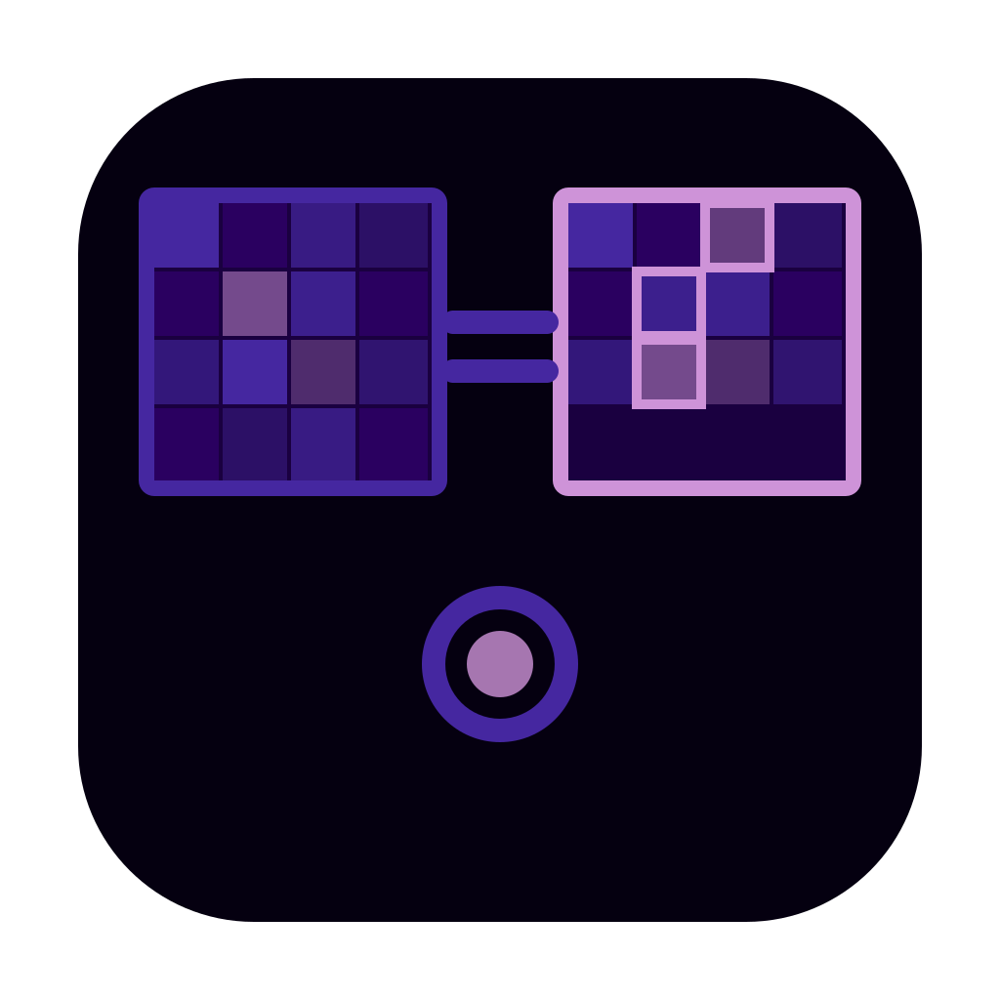

Img.Compare — 아이콘 후보 3차
Candidate_20260320_0104 | 이미지 비교 도구 (좌우 슬라이더, 차이점 강조)
icon_01.svg
좌우 분할 슬라이더
icon_02.svg
돋보기 차이점 포착
icon_03.svg
Before→After 화살표
icon_04.svg
저울 두 이미지
icon_05.svg
핀셋 세밀 비교
icon_06.svg
형광펜 차이 마킹
icon_07.svg
레이어 투명 오버레이
icon_08.svg
퍼즐 맞추기 비교

icon_09.svg
그리드 픽셀 비교
icon_10.svg
체크마크 vs X 비교